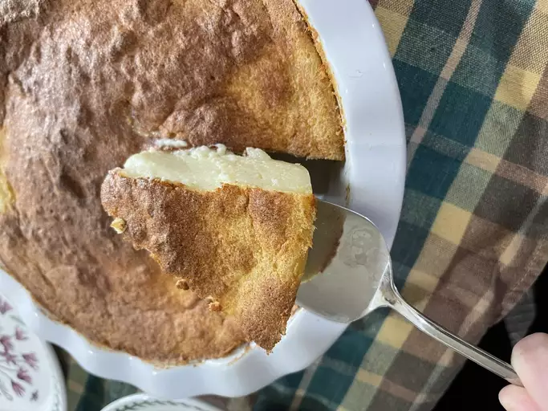

Milk Tart Recipe

Velvety Delight: Indulge in the Creamy Bliss of Milk Tart
Milk tart, a beloved South African, is a symphony of velvety custard in a delicate, buttery crust.
Its gentle sweetness is complemented by a hint of warming cinnamon, creating a harmonious balance that dances on the taste buds.
With every sumptuous bite, the creamy texture and subtle flavors unite to create a nostalgic embrace of comfort and culinary delight.
Ingredients
- cooking spray
- 1 cup white sugar
- 3 tablespoons butter, melted
- 3 egg yolks
- 1 cup cake flour
- 1 teaspoon baking powder
- 1/4 teaspoon baking powder
- 4 cups milk
- 1 teaspoon vanilla extract
- 3 egg white
- 1 tablespoon cinnamon sugar
Steps
- Preheat the oven to 375 degrees F (190 degrees C). Coat a 9-inch deep-dish pie plate with cooking spray.
- Mix together sugar and butter in a large bowl until smooth. Add egg yolks and beat until light and fluffy. Sift in cake flour, baking powder, and salt; stir until well-blended. Mix in milk and vanilla until combined.
- Whip egg whites with an electric mixer in a separate bowl to stiff peaks. Fold into batter. Pour into the prepared pie plate, sprinkle cinnamon sugar on top.
- Bake in the preheated oven for 25 minutes, then reduce temperature to 325 degrees F (165 degrees C). Continue baking until the center is set when pie is gently jiggled, 25 to 30 minutes.